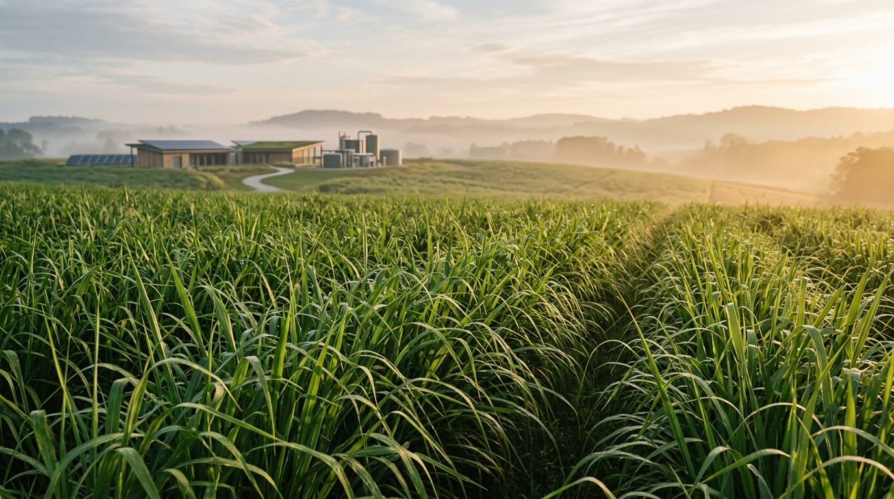

Compressed Biogas (CBG)
A pure, renewable fuel for vehicles and industries made from grass instead of fossil petroleum. Runs clean and cuts harmful vehicle emissions with every trip.
See how it's madeWe transform locally grown grass into clean biogas fuel and organic soil nutrition. Powering clean transport, restoring our land, and creating lasting prosperity for rural families.

How we convert fast-growing grass into everyday clean fuel, healthy soil nutrition, and renewable heat.
A pure, renewable fuel for vehicles and industries made from grass instead of fossil petroleum. Runs clean and cuts harmful vehicle emissions with every trip.
See how it's madeFermented organic nutrition that brings farm soils back to life. Restores natural soil carbon, retains moisture, and helps farmers grow healthy crops without chemical reliance.
Learn about soil impactClean-burning solid fuel pellets made from residual plant fibers. A sustainable, smokeless replacement for coal and firewood in commercial boilers and heating systems.
Discover circular pelletsFour enduring principles that guide our work with farmers, communities, and global partners.
We cultivate fast-growing Super Napier grass exclusively on arid, marginal lands. It requires minimal irrigation, never competes with food crops, and actively restores vital organic matter to depleted soil.
Our modern Kaligiri bioenergy facility processes 300 tonnes of grass daily into 12 tonnes of high-purity compressed biogas, delivering consistent, dependable clean fuel to commercial partners all year round.
Through long-term purchase agreements, we transform dry, rain-dependent land into reliable quarterly income for smallholders, creating over 400 sustainable livelihoods and green technical jobs for rural youth.
Every cubic meter of natural biogas replaces fossil fuel imports and prevents emissions. Because the grass absorbs atmospheric carbon as it grows, the entire fuel cycle remains cleanly balanced with nature.
How an ambitious vision grew into a living renewable energy model in Andhra Pradesh.
Built on the belief that India's clean energy transition should be led by innovative youth and grounded in the communities where feedstock is grown.
A modern 12 TPD facility turning 300 tonnes of Napier grass daily into clean fuel and organic manure, setting a benchmark for rural bioenergy infrastructure.
Nothing is discarded. Clean gas fuels transportation, leftover nutrients nourish regional farms, and residual fibers provide clean heating pellets.
Creating 40 direct careers and over 400 rural livelihoods across Kaligiri and Udayagiri, proving that sustainability and prosperity grow hand in hand.
Guided by a clear commitment to clean energy, farmer well-being, and national goals.
To produce clean biogas from local crops, reducing petroleum dependence while building direct livelihoods and long-term economic resilience for rural farming families in Kaligiri.
To empower youth entrepreneurs and farmers across Andhra Pradesh with scalable bioenergy projects that replenish soils, elevate crop yields, and advance India toward its 500 GW clean energy goal and 2070 net-zero horizon.
A diverse group of engineers, entrepreneurs, farmers, and educators united by a shared commitment to clean energy and rural prosperity.
Managing Director & CEO
Asish holds a B.Tech in Computer Science from KL University. He began his career in data-driven consulting at Deloitte before advancing to software engineering at Accenture, where he delivered complex technical solutions for global clients. Transitioning to renewable energy entrepreneurship, Asish now leads the establishment of a 12 TPD Compressed Biogas (CBG) plant powered by Napier grass. His work focuses on advancing India's sustainable energy transition, generating rural employment, and creating long-term circular economy value.
Director
Kalyani holds a B.Sc. in Computer Science from S.V. University, Tirupati. Driven by a deep commitment to industrial development and social responsibility, she brings a proactive, community-first approach to building sustainable enterprise initiatives.
Director
Mithil is a HealthTech Product Manager and startup founding member with expertise in Genetic Engineering, diagnostics, and AI-powered platforms. Having helped establish and scale emerging ventures alongside extensive experience at leading molecular diagnostics firms, he bridges strategic organizational leadership, product marketing expertise, and deep technical acumen to position innovations effectively and translate complex clinical workflows into scalable technology.
Director
Mahalakshmi is the Proprietor of SreeVenkateshwara Farms, overseeing a flock of over 2,000 sheep. Under her leadership, the farm has established itself as a regional benchmark for sustainable livestock management, high-yield breeding, and quality supply chains.
Director
Suchithra holds a Master's in Arts and a Bachelor's in Education, backed by 14 years of leadership as a Senior Teacher and Coordinator at Bharatiya Vidya Bhavan's A.R.R. School. She channels her extensive management experience into promoting green energy ecosystems and purpose-driven entrepreneurship.
Director
Kalyani brings 15 years of hands-on business experience running an independent textile operation, coupled with deep practical knowledge of sustainable agriculture. She leverages her operational background and passion for eco-friendly farming to advance sustainable energy projects.
Director
Sarat brings over a decade of experience building sustainable global commodity chains, impacting more than 12,000 farmers across India. An IUCN-certified Nature-based Solutions expert, he previously held leadership roles at Yasasree Viroha Impex and Grameen Vikas Kendram Society. He is currently developing a sustainable rice value chain in Andhra Pradesh and leading the ground-up expansion of Yasasree India's new Infrastructure division.
Five simple, transparent steps from living grass to clean fuel and healthy soil.
Fast-growing Super Napier grass is sustainably cut and sorted from local partner farmers.
Beneficial natural microbes gently break down plant matter in sealed, oxygen-free tanks.
The biogas is purified and compressed into clean, high-energy fuel ready for vehicles and factories.
The nutrient-dense organic slurry is separated into pure, chemical-free fertilizer for crop soils.
Remaining plant fibers are compressed into dense, smokeless pellets for industrial clean heating.
Tangible, positive change for rural communities, farm soils, and global climate progress.
We provide steady, skilled employment for local technicians, logistics handlers, and young engineers — stemming urban migration and bringing tech-driven green jobs home.
Farmers receive contract farming stability with fair, prompt payments. Transforming low-yield, rain-dependent acreage into dependable quarterly earnings.
Our fermented organic manure returns critical organic carbon and balanced nitrogen back to farm soils, reducing chemical expenditure and safeguarding groundwater.
Proudly aligned with India's SATAT initiative, the Ministry of Petroleum & Natural Gas, and national climate commitments toward 500 GW clean capacity and Net-Zero 2070.
Whether you are a farming community, an industrial fuel buyer, an investor, or a government partner, we welcome thoughtful collaborations.